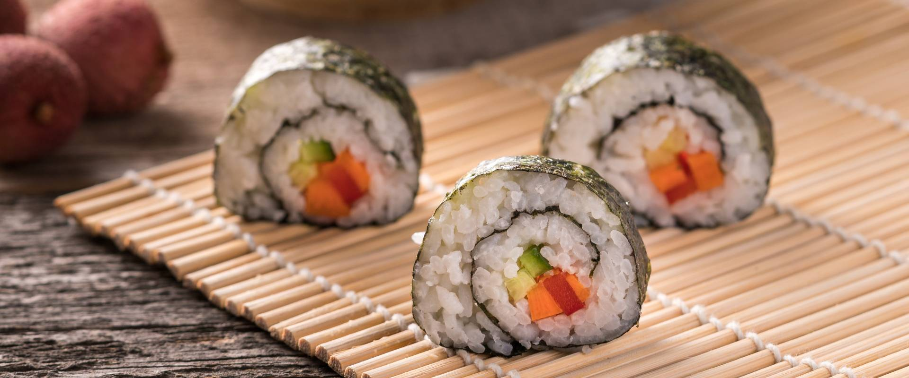

Sushi

A nice Japanese dinner you can make at home in 10 minutes!
Ingridients
- Sushi rice
- Nori seaweed
- Sushi vinegar
- Fish, avocado, cucumber, or any other toping, that you like
Cooking instructions
- Cook sushi rice for 15 minutes. When cooled, fluff it with a fork.
- Prepare rolling mat. Place nori, than rice on top, than put the desired ingridient on one side of the roll
- Gently roll the sushi to form a tight roll
- Cut it with a wet knife and enjoy!